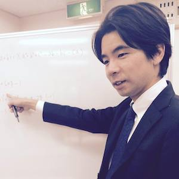

Application

First Application
１つの目のアプリケーションの説明１つの目のアプリケーションの説明１つの目のアプリケーションの説明１つの目のアプリケーションの説明１つの目のアプリケーションの説明１つの目のアプリケーションの説明１つの目のアプリケーションの説明１つの目のアプリケーションの説明１つの目のアプリケーションの説明１つの目のアプリケーションの説明Second Application
2つの目のアプリケーションの説明Third Application
3つの目のアプリケーションの説明Developer

吉田 昌矢（よしだ まさや）
奈良県奈良市出身。
couch surfingで30カ国100人の旅行者を自宅に泊めた経験あり。
現在、文京区千石でフレック学習塾を運営。